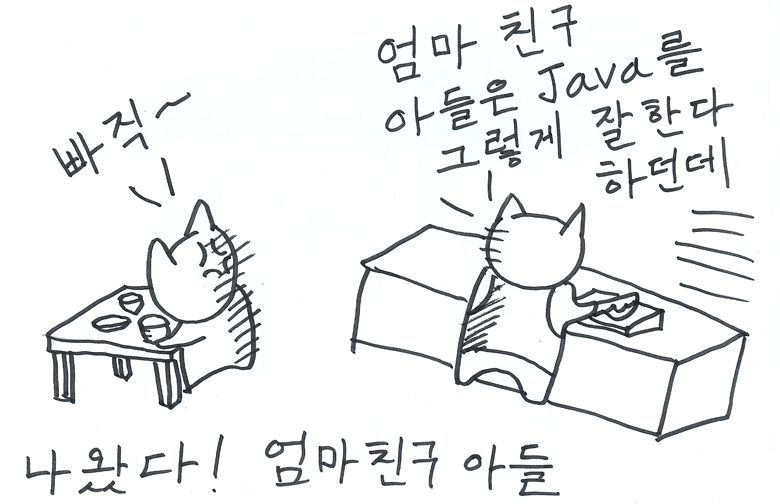
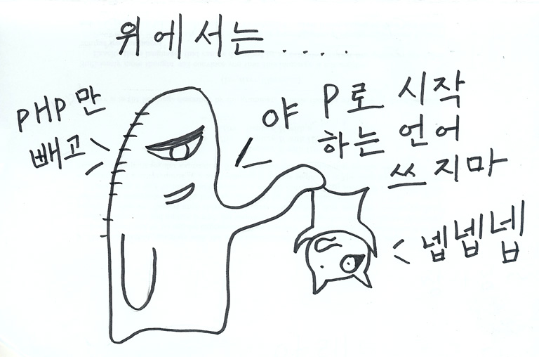
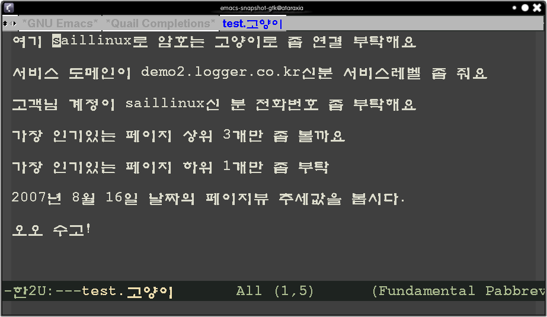
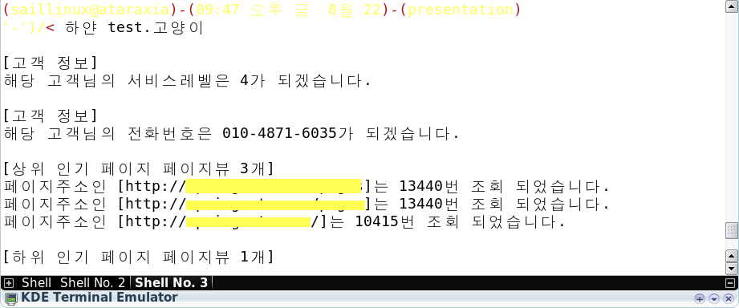
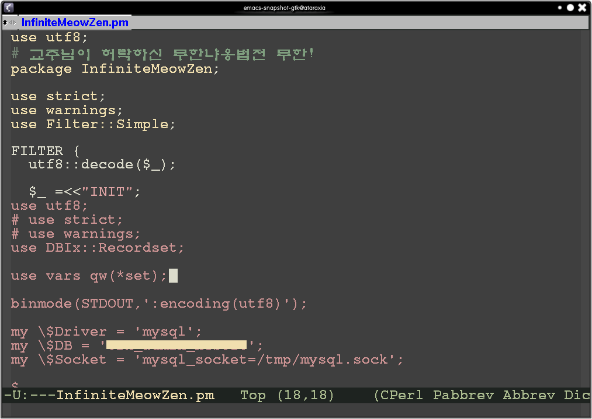
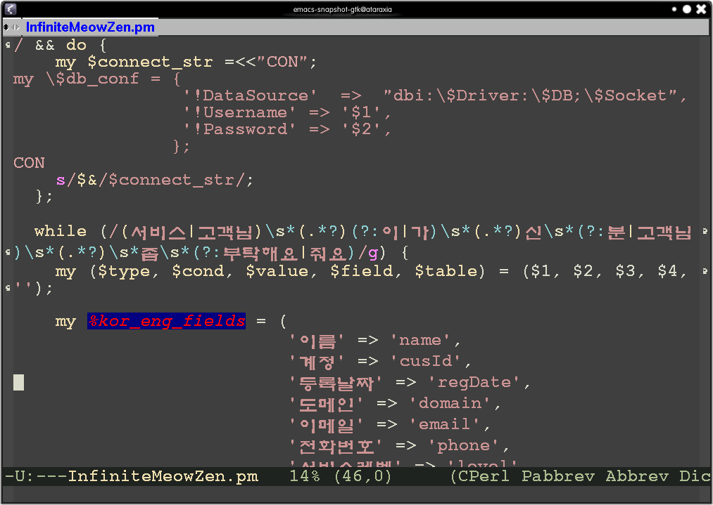
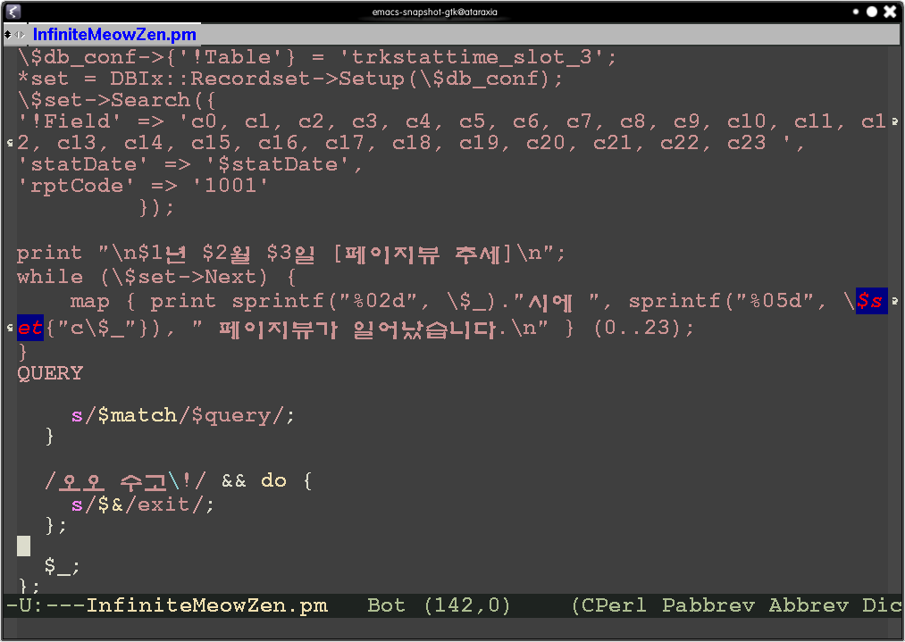

| prev Translate | Page next | |
Bizspring
Perlmania
문서는 이곳에서도
볼 수 있습니다:
친구들과의 거리감
가족과의 의사 소통

절대 복종 충성

test.고양이

실행화면

소스 #1

소스 #2

소스 #3
alias 하얀='perl -M/home/saillinux/presentation/InfiniteMeowZen'
파일 -----> 파서
파일 -----> 필터 -----> 파서
Filter {
$_
}
고객님 계정이 saillinux신 분 전화번호 좀 부탁해요
$db_conf->{'!Table'} = "customer";
*set = DBIx::Recordset->Setup($db_conf);
$set->Search({
'cusId' => 'saillinux',
'$fields' => 'phone',
});
print "
[고객 정보]
";
while ($set->Next) {
print "해당 고객님의 전화번호"."은 $set{phone}가 되겠습니다.
";
}
친해 졌나요?